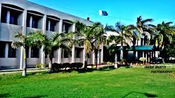

About Rachna CollegeRCET is Situated at the hub of the Engineering Industries of the country, Rachna College derives its name from the lands stretching between the rivers, the Ravi and the Chenab. College was inaugurated by Lt. Gen. (R) Khalid Maqbool Governor of Punjab on 15th January, 2003, with the induction of the first batch of 105 students. Later on University of Engineering & Technology, Lahore (UET) Adopted Rachna College of Engineering & Technology, Gujranwala as Constituent College in 2007.The College is located on the left bank of Nokhar Branch Canal about seven kilometers off (East) G.T. Road, between Gakhar and Wazirabad. The Rachna College of Engineering & Technology, Gujranwala campus is spread over an area of about 25 acres, surrounded by a canal on the south and lush agricultural land on the remaining three sides. In addition to this, about 48 acres of abutting land has been purchased with the aim of expansion in the near future. Explore More |
 |